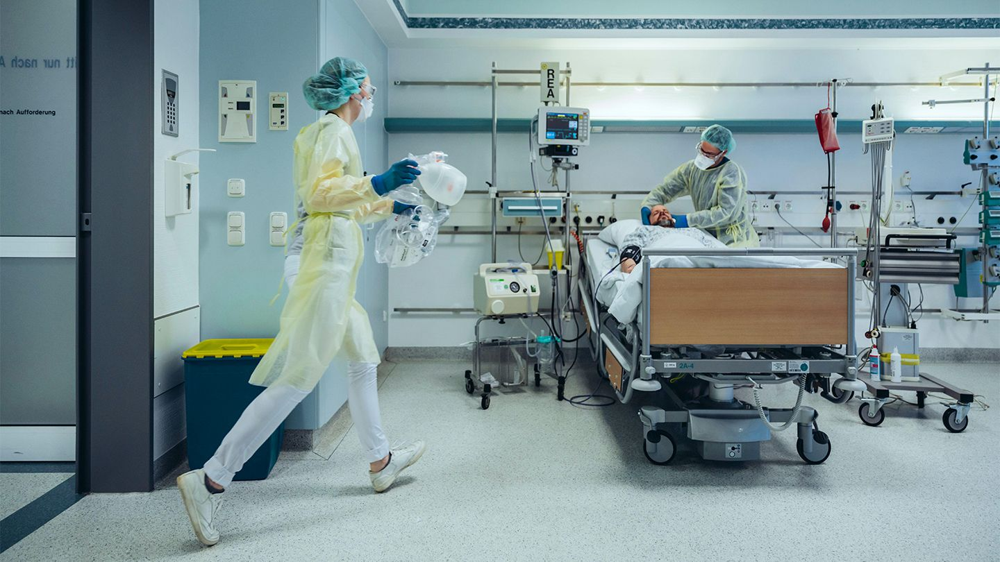

Nhập viện

Nhập viện: Trong mùa cúm, các bệnh viện đã trải qua sự gia tăng đáng kể trong các ca nhập viện liên quan đến cúm. Sự gia tăng này đặc biệt rõ rệt ở người già và những người có bệnh nền, chẳng hạn như bệnh hô hấp mãn tính, tiểu đường và bệnh tim. Số lượng bệnh nhân cần chăm sóc y tế cho các triệu chứng cúm nghiêm trọng đã đặt áp lực lớn lên các dịch vụ y tế, dẫn đến tình trạng quá tải ở các phòng cấp cứu và thời gian nằm viện kéo dài.
Tác động của sự gia tăng này đã được cảm nhận trên toàn hệ thống y tế. Nhân viên y tế phải đối mặt với khối lượng công việc tăng cao, và các nguồn lực như giường bệnh và máy thở đã bị căng thẳng. Tình huống này nhấn mạnh sự cần thiết của các biện pháp phòng ngừa hiệu quả để quản lý sự gia tăng của bệnh nhân cúm và đảm bảo rằng các cơ sở y tế có thể tiếp tục cung cấp chăm sóc cho tất cả bệnh nhân, không chỉ những người bị cúm.
Để đối phó với những thách thức này, Trung tâm Kiểm soát và Phòng ngừa Dịch bệnh (CDC) nhấn mạnh tầm quan trọng của việc tiêm phòng cúm. Tiêm phòng là chiến lược chính để giảm tỷ lệ các ca cúm nghiêm trọng và do đó, giảm gánh nặng cho hệ thống y tế. Bằng cách khuyến khích tiêm phòng rộng rãi, đặc biệt là trong các nhóm có nguy cơ cao, CDC nhằm ngăn ngừa nhập viện và giảm áp lực lên các cơ sở y tế, đảm bảo rằng họ vẫn có khả năng xử lý cả các vấn đề sức khỏe liên quan và không liên quan đến cúm một cách hiệu quả.